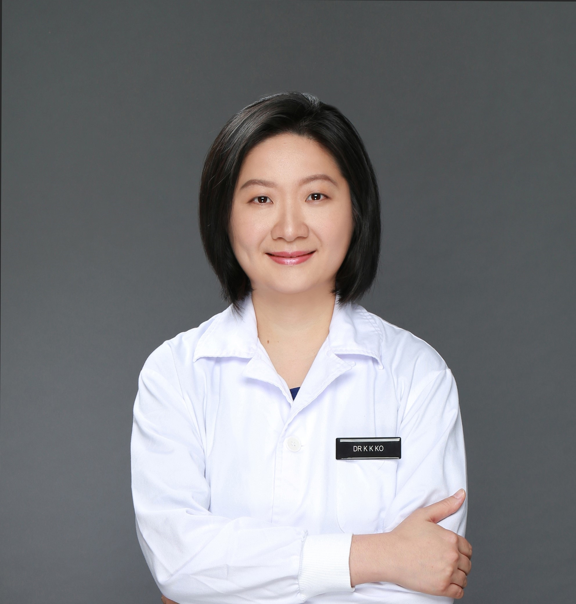
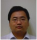
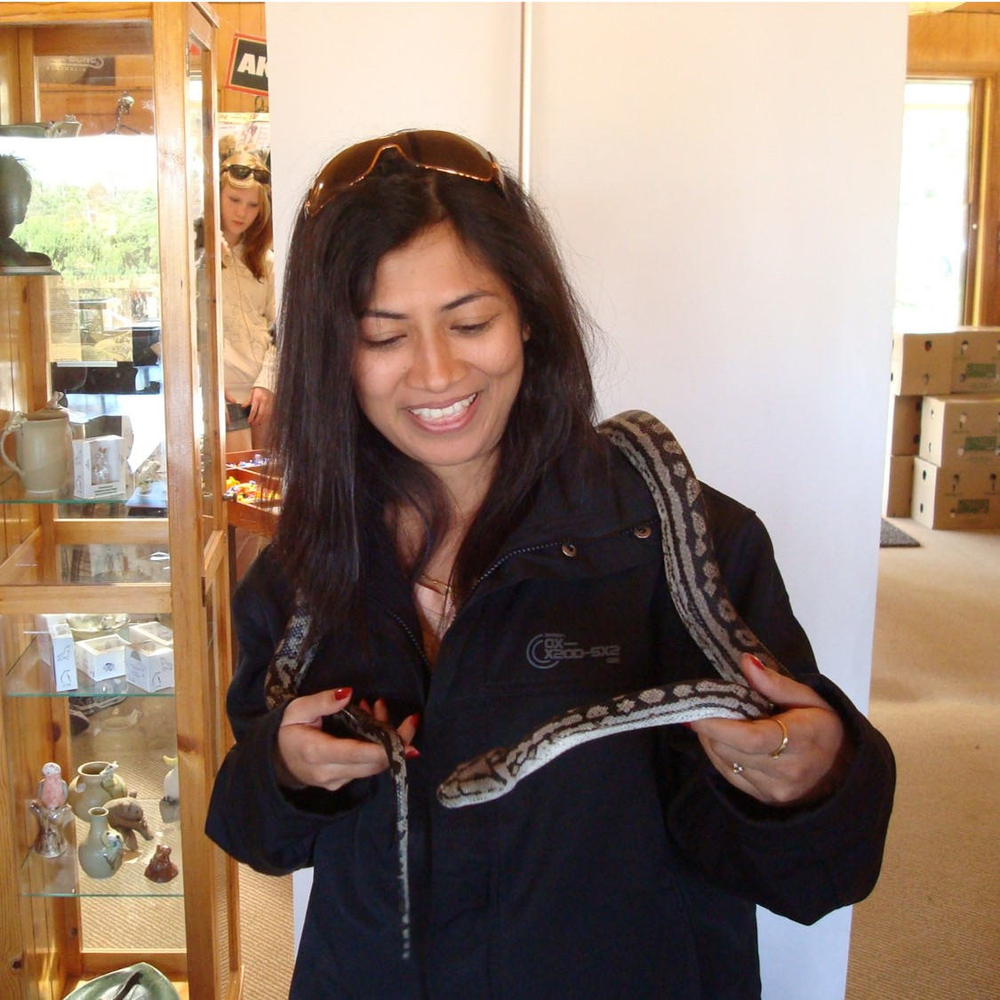
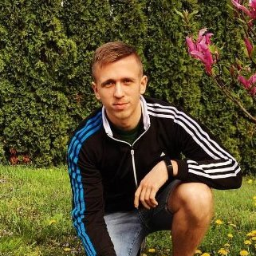
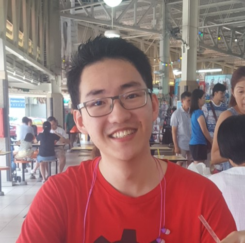
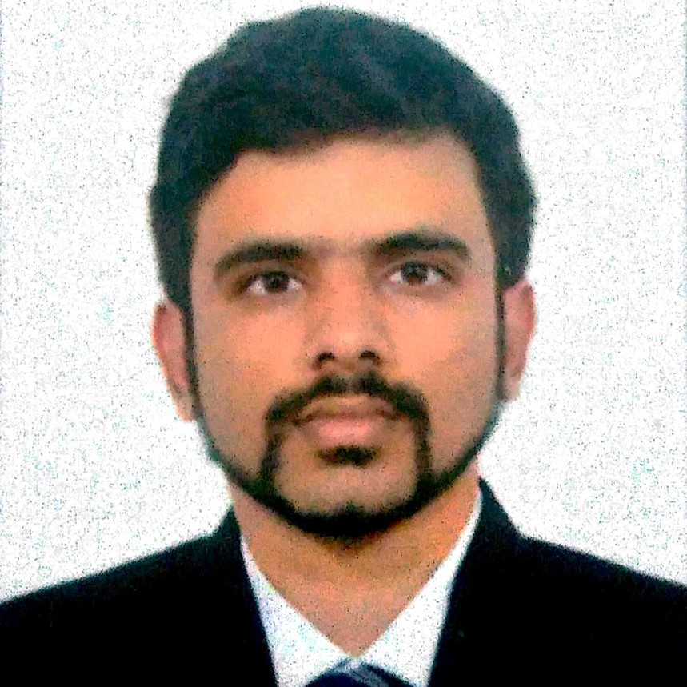
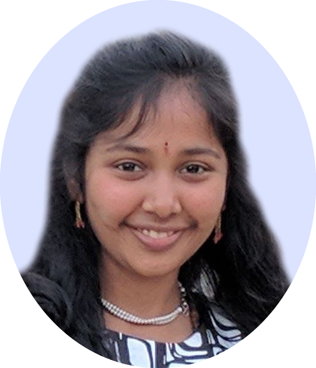
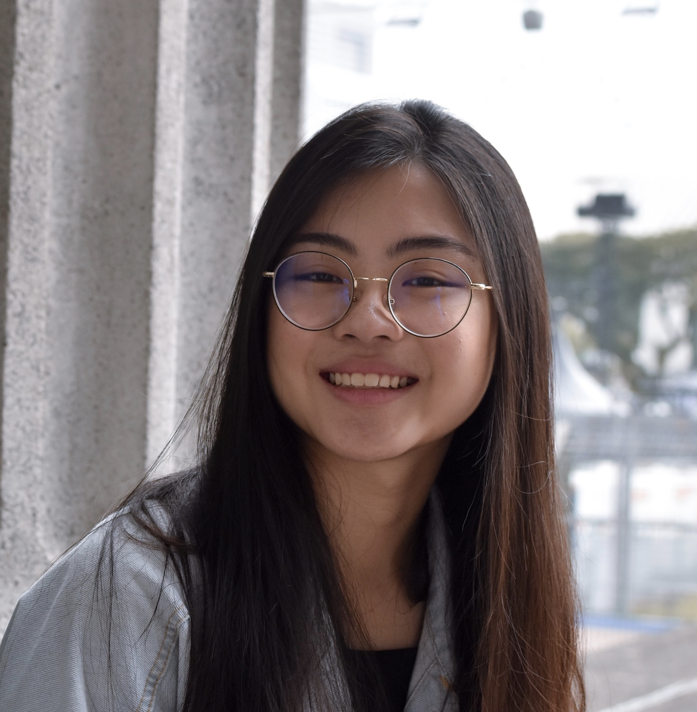
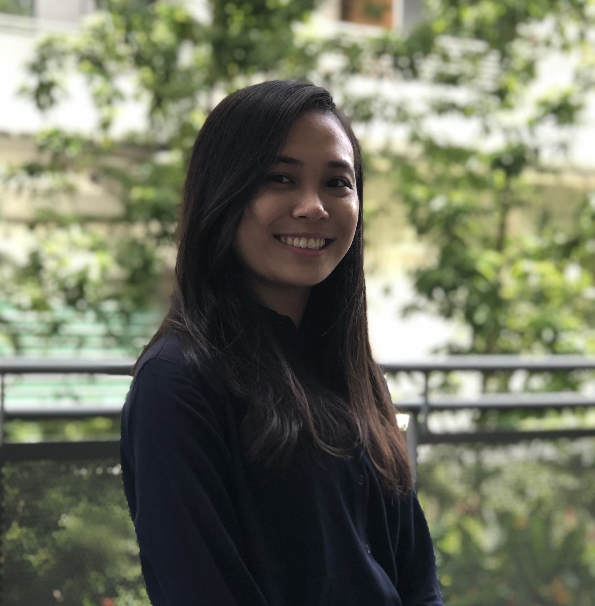
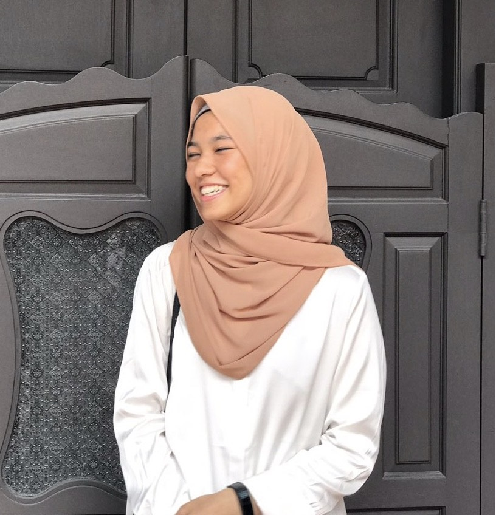

- Niranjan Nagarajan (Principal Investigator)
- B.A. in Computer Sci. & Mathematics (Ohio Wesleyan, 2000)
- Ph.D. in Comp. Sci. (Cornell Univ., 2006; Advisor: Uri Keich)
- Postdoctoral Fellowship in CBCB (UMD, Advisor: Mihai Pop)
- Profiles: Google Scholar, LinkedIn

- Denis Bertrand (Staff Scientist)
- M.S. in Computer Sci. (UM2, 2002)
- Ph.D. in Comp. Biol. (UM2, 2005; Advisor: Olivier Gascuel)
- Postdoctoral Fellowship in DIRO (UDM, Advisor: Nadia El-Mabrouk)
- Profiles: Google Scholar
- Kern Rei Chng (Programme Manager)
- Ph.D. (NUS, 2012)
- Profiles: Google Scholar


- Suphavilai Chayaporn (Post Doctoral Fellow)
- B.S. in Computer Sci. (Kasetsart Univ., 2011)
- M.S. in Computer Sci. (Purdue Univ., 2014)
- Ph.D. in Computer Sci. (NUS SoC, 2019)
- Profiles: Google Scholar

- Ng Hui Qi Amanda (Senior Research Officer)
- B.S. (Hons.) in Biological Sci. (NTU, 2013)
- Profiles: LinkedIn, ResearchGate
- Kwah Junmei Samantha (Research Officer)
- B.S. (Hons.) in Biological Sci. (NTU, 2013)
- Jonathan Kang (Research Fellow)
- B.S. in Applied Mathematics (Biology) (Brown Univ., 2012)
- B.A. in Philosophy (Brown Univ., 2012)
- M.S. in Statistics (Stanford Univ., 2016)
- Ph.D. in Biology (Stanford Univ., 2018, Advisor: Noah Rosenberg)
- Profiles: Google Scholar
- Aarthi Ravikrishnan (Post Doctoral Fellow)
- Ph.D. in Computational Systems Biology (Indian Inst. of Tech., 2019)
- Profiles: Google Scholar, LinkedIn

- Ahmad Nazri Mohamed Naim (Senior Research Officer)
- B.S. in Biotech. (Univ. of Tasmania, 2007)
- Profiles: LinkedIn

- Eliza Ho (Research Officer)
- B.S. (Hons.) in Biotech.(Univ. of Queensland)

- Rafael Peres Da Silva (Graduate Student)
- M.S. in Biophysics (Federal Univ. of Rio de Janeiro, 2017)
- Ph.D. in Computer Sci. (NUS SoC, 2018-Present)
- Profiles: Google Scholar

- Sylvain Jun-Zhe Riondet (Graduate Student)
- M.S. in Electrical Eng. (INSA Strasbourg, 2015)
- Ph.D. in Computer Sci. (NUS SoC, 2018-Present)

- Philip Kwan (Visiting Scientist)
- B.S. (Hons.) Biotech. (Univ. of Toronto, 2013)
- Ph.D in Medicine (NUS YLLSoM, 2016-2020)
- Profiles: LinkedIn

- Eileen Png (Research Associate)
- B.S. (Hons.) in Biotech. (UNSW, 2002)
- Ph.D in Genetic and Mol. Epidemiology (NUS YLLSoM, 2010)
- Profiles: LinkedIn
- Jonathan J.Y. Teo (Research Fellow)
- B.A. in Physics and Biophysics (Johns Hopkins Univ., 2012)
- Ph.D in Computational Bio. (MIT, 2019)
- Profiles: LinkedIn

- Karrie Ko (Graduate Student)
- MD (Duke-NUS Medical School)
- FRCPath, FRCPA
- Minghao Chia (Research Fellow)
- B.S. Biomedical Science (UCL, 2013)
- Ph.D in Cell Fate and Gene Regulation (The Francis Crick Institute, 2019)
- Profiles: ResearchGate
- Gao Song (Graduate Student)
- Current Position: EMBL Australia post-doctoral researcher

- Li Juntao (Research Fellow)
- Current Position: Biostatistician (Lundbeck, Singapore)

- Boey Jia Hui Esther (Research Officer)
- Current Position: Delta Electronics
- Burton Chia (Bioinformatics Analyst)
- Current Position: Bioinformatics Analyst (NCCS)
- Andreas Wilm (Research Associate)
- Current Position: Cloud Solution Architect (Microsoft)
- Sun Miao (Research Fellow)
- Current Position: Bioinformatics Scientist (Human Longevity)

- Tannistha (Staff Scientist)
- Current Position:
- Wu Guangxi (Post-doctoral Fellow)
- Current Position: ORISE Fellow (USDA-ARS)

- Jayce Koh (Bioinformatic Specialist)
- Current Position:Bioinformatic Specialist (SRC-Data Hub, GIS)
- Nathaniel Tay (Research Officer)
- Current Position:Duke-NUS Graduate Student
- Jessica Que
- BS in Univ. of British Columbia
- Wang Siqi
- BS in Nanyang Tech. Univ.
- Grace Yeo
- BS in Johns Hopkins; PhD in MIT

- Sibyl Drissler
- BS in Univ. of British Columbia
- Ankica Gogić
- MS in Univ. of Zagreb

- Janja Paliska
- MS in Univ. of Zagreb
- Mirta Dvornicic
- MS in Univ. of Zagreb
- Vanessa Županović
- MS in Univ. of Zagreb
- Ziaeddin Alborzi
- PhD in IRIA (France)

- Filip Hrenić
- M.S. in Univ. of Zagreb
- Vedrana Vazdar
- M.S. in Univ. of Zagreb
- Kenneth Lim Kun Ming
- B.S. in National Univ. of Singapore
- Camille de Cevins
- M.S. in Université Paris Saclay

- Jim Shaw
- B.S. in Univ. of British Columbia
- Ong Koon Han
- BAcc in Singapore Management Univ.
- Tan Jing Chong
- BA in Univ. of Cambridge
- Jonathan Ng
- M.S. in National Univ. of Singapore

- Tamar Av-Shalom
- B.S. in Univ. of British Columbia

- Manesh Narayan K
- M.S. in Birla Inst. of Tech. and Sc., Pilani

- Lorna Tu
- B.S. in Univ. of British Columbia
- Aanchal Mongia
- Ph.D. in Indraprastha Inst. of Info. Tech. Delhi
- Gerald Tan
- B.S. in National Univ. of Singapore

- Maanasa Natrajan
- B.S. in Drexel Univ.
- Michael Zhang
- B.S. in Univ. of British Columbia

- Cheyenne Koh Qi En
- Diploma in Biomedical Science in Ngee Ann Polytechnic

- Nurul Amira Yeo
- Diploma in Biomedical Science (Biomedical Research Specialisation) in Ngee Ann Polytechnic

- Nur ‘Ain Binte Zainul Abdeen
- Diploma in Biomedical Sciences at Republic Polytechnic (2018 - present)
SPLASH Graphical Abstract (Aw et al, 2016)

PARTE Graphical Abstract (Wan et al, 2012)

1. Post-doctoral Fellowship in RNA Structural Genomics
We are seeking highly qualified computational scientists with expertise/interest in RNA structure and biology. The Nagarajan Lab, in collaboration with the Wan Lab at the Genome Institute of Singapore are looking for applicants to direct collaborative projects involving the development of new algorithms and the analyis of novel high-throughput, genome-scale RNA structure datasets. Successfull candidates will work in a highly inter-disciplinary environment to apply cutting edge techniques in computational and experimental genomics for achieving breakthrough discoveries that significantly advance human health and well-being.RNA structure is fundamental to its function in almost every cellular process and for understanding disease biology. We have developed new approaches to probe RNA secondary and tertiary structure genome-wide [1-4] and are applying these for a range of applications including (i) identification of new targets for developing antibiotics against extremely drug-resistant pathogens (ii) understanding host-microbial interactions in diseases and (iii) identifying structural switches that control gene regulation during stem-cell differentiation and oncogenesis. We are seeking exceptional researchers who will join us in leveraging this unique opportunity for significant basic and translational advances in RNA genomics.
References
- Kertesz M*, Wan Y*, Mazor E, Rinn JL, Nutter RC, Chang HY, Segal E "Genome-wide measurement of RNA secondary structure in yeast." Nature 2010 Sep 2 ; 467(7311) : 103-7
- Wan Y, Qu K, Ouyang Z, Kertesz M, Li J, Tibshirani R, Makino DL, Nutter RC, Segal E, Chang HY "Genome-wide measurement of RNA folding energies." Mol Cell 2012 Oct 26 ; 48(2) : 169-81 Epub 2012 Sep 13
- Wan Y.*, Qu K.*, Zhang QF, Manor O, Ouyang Z, Zhang J, Snyder MP, Segal E and Chang HY "Landscape and variation of RNA secondary structure across the human transcriptome." Nature 2014 ; 505, 706–709
- Aw JG, Shen Y, Wilm A, Sun M, Lim XN, Boon KL, Tapsin S, Chan YS, Tan CP, Sim AY, Zhang T, Susanto TT, Fu Z, Nagarajan N#, Wan Y# "In Vivo Mapping of Eukaryotic RNA Interactomes Reveals Principles of Higher-Order Organization and Regulation." Mol Cell 2016 May 19 ; 62(4) : 603-17 Epub 2016 May 12
Qualifications
- PhD in Computational Biology/Computer Science/Applied Mathematics/Genomics
- Strong analytical and programming skills (C/C++, perl/python, UNIX environment). Candidates with significant experience in RNA structure prediction will be strongly preferred.
How To Apply: E-mail cover letter, research statement, curriculum vitae, and contact details of at least three referees to Niranjan Nagarajan (nagarajann@gis.a-star.edu.sg) and Wan Yue (wany@gis.a-star.edu.sg)
Eczema Model (Chng et al, 2016)

Malassezia Phylogeny (Wu et al, 2015)

2. Post-doctoral Fellowship in Skin Microbiome Studies
We are looking for genomics researchers with a keen interest in studying the role of microbes in skin diseases. The Nagarajan lab in the Genome Institute of Singapore, in collaboration with the Epithelial Biology group in the Institute of Medical Biology are seeking candidates to lead multiple projects studying the role of the microbiome in inflammatory diseases of the skin (e.g. eczema, psoriasis etc.). Successful candidates will have the opportunity to design new studies in close interaction with doctors and domain experts, applying nextgen omics and analytical approaches to understand the complex host-microbiome interactions that lead to skin disease [1].The role that microbes play on human skin is still poorly understood despite characterization of the diversity of habitats and niches that they occupy [2]. This is particularly the case for skin diseases which can affect a large proportion of the population and have a significant impact on their quality of life. We recently conducted a metagenome-wide association study for eczema, identifying key microbes and their likely functional roles [1]. We are interested in extending this work in several directions including (i) characterizing the utility of pre-/probiotic therapies (ii) developing in vitro and in silico models for host-microbiome interactions [3] and (iii) studying the role of fungi (e.g. Malassezia) on human skin [4].
References
- Chng KR, Tay ASL, Li C, Ng AHQ, Wang J, Suri BK, Matta AS, McGovern N, Janela B, Wong XFC, Sio YY, Au BV, Wilm A, De Sessions PF, Lim TC, Tang MBY, Ginhoux F, Connolly JE, Lane EB, Chew FT, Common JEA#, Nagarajan N# "Whole metagenome profiling reveals skin microbiome-dependent susceptibility to atopic dermatitis flare" Nature Microbiology 2016 1:16106 doi:10.1038/nmicrobiol.2016.106
- Oh, J. et al. "Biogeography and individuality shape function in the human skin metagenome." Nature 2014 514, 59–64
- Li C, Lim KM, Chng KR, Nagarajan N# "Predicting microbial interactions through computational approaches." Methods 2016 Jun 1 ; 102 : 12-9 Epub 2016 Mar 26
- Wu G, Zhao H, Li C, Rajapakse MP, Wong WC, Xu J, Saunders CW, Reeder NL, Reilman RA, Scheynius A, Sun S, Billmyre BR, Li W, Averette AF, Mieczkowski P, Heitman J, Theelen B, Schröder MS, De Sessions PF, Butler G, Maurer-Stroh S, Boekhout T, Nagarajan N#, Dawson TL# "Genus-Wide Comparative Genomics of Malassezia Delineates Its Phylogeny, Physiology, and Niche Adaptation on Human Skin." PLoS Genet 2015 Nov ; 11(11) : e1005614 Epub 2015 Nov 5
Qualifications
- PhD in Computational Biology/Computer Science/Applied Mathematics/Genomics
- Strong analytical and programming skills (C/C++, perl/python, UNIX environment). Candidates with significant experience in Microbiome Studies or Skin Biology will be strongly preferred.
How To Apply: E-mail cover letter, research statement, curriculum vitae, and contact details of at least three referees to Niranjan Nagarajan (nagarajann@gis.a-star.edu.sg)